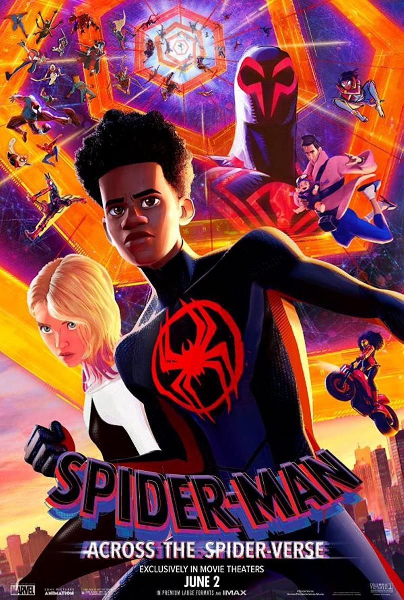
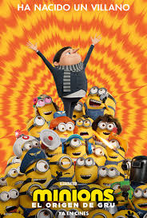

-

SUPEN MARIO BROS
Comedia basada en la popular franquicia de videojuegos de Nintendo. La película sigue a los hermanos Mario (Mario y Luigi), dos fontaneros de Brooklyn, que son transportados a un mundo paralelo llamado el Reino Champiñón. -

SPIDER-MAN
Es una serie de animación que sigue las aventuras del icónico superhéroe Peter Parker, también conocido como Spider-Man. En la mayoría de las adaptaciones animadas, la trama gira en torno a cómo Peter equilibra su vida de adolescente con sus responsabilidades como un héroe con poderes arácni. -

MINIONS EL ORIGEN DE GRU
Gru sueña con convertirse en el villano más grande del mundo, y su oportunidad llega cuando un grupo de supervillanos llamado "Los Vicious 6" a pesar deNudillos salvajes . Gru